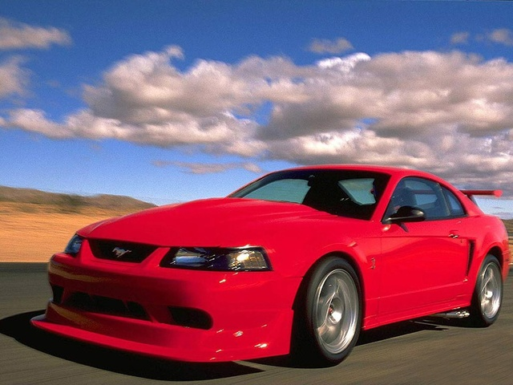

|  | Ford SVT Mustang Cobra (znany również jako SVT Mustang Cobra SVT Cobra, lub po prostu jako Cobra ) to muscle car / samochód pony model, który został zbudowany w modelowych latach 1993 do 2004 przez Ford Motor Company jest specjalny zespół pojazdu podziału (lub SVT, w skrócie). SVT Cobra była wysokowydajną wersją Forda Mustanga , uważanego za top-of-the-line, ponieważ znajdował się powyżej modeli Mustang GT i Mach 1 w erze produkcji. Trzykrotnie przygotowywano wyścigowo-uliczny wariant SVT Cobra R w ograniczonej liczbie |